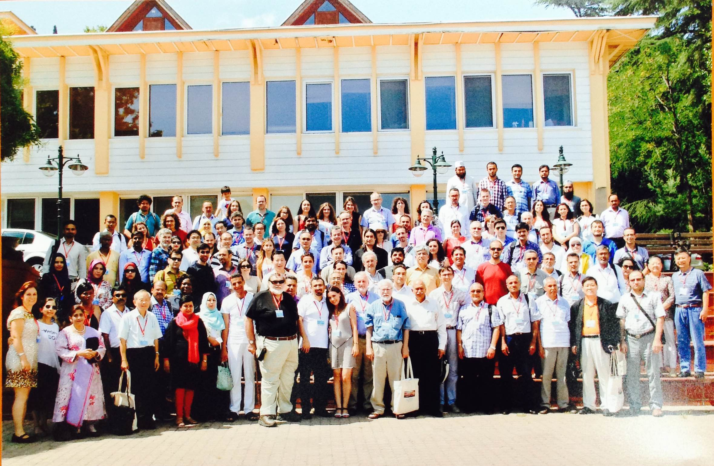

Fixed Point Theory and Its Applications
July 2015
Galatasaray University, İstanbul, Turkey

{kind=link}
The purpose of the conference is to bring together leading experts and researchers in fixed
point theory and to assess new developments, ideas and methods in this important and dynamic
field. A special emphasis will be put on applications in related areas, as well as other
sciences, such as the natural sciences, medicine, economics and engineering.
The conference will continue the tradition of the previous fixed point theory meetings which
were held in Marseille (1989), Halifax (1991), Seville (1995), Kazimierz Dolny (1997), Haifa
(2001), Valencia (2003), Guanajuato (2005), Chiang Mai (2007) and Changhua (2009),
Cluj-Napoca (2012)
You can access the program from this link. Other
details will be announced on this webpage.
Useful Info
- How to reach Galatasaray University?:
Galatasaray University is 24 km away from the İSTANBUL ATATÜRK AIRPORT. Right in front of the exit door of the Ataturk International Airport, take the HAVAŞ bus to TAKSİM (40 mn, 10 TRY) and get off at the last stop, TAKSIM SQUARE (for detailed information about HAVAS buses please visit http://www.havas.net/en/shuttle-parking/istanbul-ataturk-airport/ ). Then either take a taxi (15mn, ~15 TRY), or take a bus and get off at the stop Galatasaray University. The number of busses are: 40 (Taksim - Sarıyer), 42T (Taksim - Bahçeköy), 40T (Taksim - İstinye - Dereiçi), DT1 (Taksim - Ortaköy Dereboyu), DT2 (Taksim - Ortaköy Dereboyu).
Second possibility, from İstanbul Atatürk Airport to Galatasaray University is taking a taxi (45 mn, ~70 TRY).
Finally, you may take the metro from İstanbul Atatürk Airport and change to tramway at the Zeytinburnu station. Get off at the last stop in Kabataş. From Kabatas taxi costs 8 TRY, there are also regular buses (get on the bus going to Ortaköy direction).
If you are coming from Sabiha Gökçen Airport, take the HAVAŞ bus to TAKSİM (~1.5 hr, 17 TRY) (for more detailed information, please visit http://www.havas.net/en/shuttle-parking/istanbul-sabiha-gokcen-airport/ ).
Keep in mind that, Atatürk Airport is more closer than Sabiha Gökçen Airport to the Galatasary University.
- Local Information:
Galatasaray University is at 10-15 minutes by walk from both Beşiktaş and Ortaköy. If one wants to take a bus to University, he/she can take any bus working on the shore (for example, the number of busses from Kabataş: 22, 22RE, 25E; from Ortaköy: 40, 40T, 42T, DT1, DT2).
The best way to reach Galatasaray University from Anatolian side of the city is to take a boat to Beşiktaş from Kadıköy or Üsküdar.
For Metro, Tram, Ferry 9and Busses either you can use Akbil (1.95 TRY per trip, and you can charge your Akbil Card) or use tickets (1 ticket: 4 TRY, 2 ticket: 7 TRY, 3 ticket: 10 TRY, 5 ticket: 15 TRY, 10 ticket: 28 TRY).
- Time Schedule of IDO Ferries: http://sehirhatlari.com.tr/en
- Istanbul Rail Network Map http://www.istanbul-ulasim.com.tr/media/8540/erisim_2200px_1546px-01.jpg
- Bank Services:
In general Banks are open between 8:30 - 17:30 from Monday to Friday.
- Bank Services:
In general Banks are open between 8:30 - 17:30 from Monday to Friday.
- Currency:
The currency in Turkey is Turkish Lira (TRY). Actually 1 US $ = 1.95 TRY and 1 Euro = 2.60 TRY (August 20, 2013).
- Drinking Water:
Although it is safe to drink tap water, it is recommended to buy bottled drink water which can be found almost everywhere at stores. There are several supermarkets in Beşiktaş which is 15 minutes on walk from GS University. You can safely brush your teeth with tap water.
- Electricity:
The electricity supply is 220 V, 50 Hz, with the type of sockets which are standard in most European countries.
- Language:
In Turkey the official language is Turkish. The Turkish language comes from Central Asian Languages Family and very different from the european languages. The Turkish alphabet is based on the latin alphabet. In general, in Istanbul many people talk English and you can easily communicate with other people. As İstanbul is a touristic city you can find many tourism offices.
- Phone Information:
As it belongs to two continents in İstanbul there are two geographical regions : European and Asian sides. The local telephone code of European side is 212 and the one of the Asian side is 216. The national telephone code of Turkey is 90. All of the telephone numbers consist of 7 digits. For example telephone number of Galatasaray University is 2274480 and the code of the European side is 212. So if you want to call Galatasaray University from Asian side the number transforms into 0 212 2274480. If you want to call the same number from abroad it transforms into 00 90 212 2274480. There are prepayed telephone cards of Turkish Telecom specially designed for calling abroad.
- Shopping:
Almost all of the shopping centers are open every day until 22:00 hours.
- Safety:
Beware of dangerous and inconsiderate driving, especially when crossing roads. Even if you are on a pedestrian crossing, look carefully before crossing. Turkey is a comparatively safe country as far as crime is concerned, but it is best to take reasonable precautions against pickpockets in crowded areas.
- Time Zone:
The time zone is 1 hour later from Central European Time Zone, 2 hours later from the Greenwich Mean Time.
- Visa information for foreigners (general):
http://www.mfa.gov.tr/visa-information-for-foreigners.en.mfa"
{kind=link}
© GSÜ Math. Tüm hakları saklıdır.